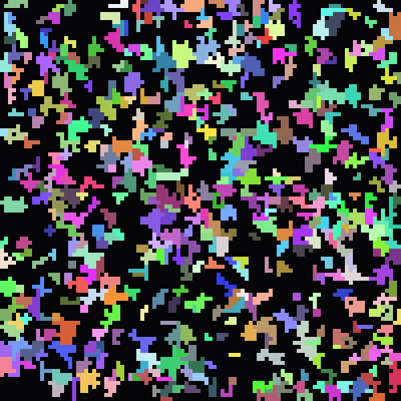

featured works
Mochisura / Fukuoka hands-on maker
挑戦を、 やさしく進める道具。
福岡でリラクゼーションセラピストとして活動しながら、 AI、デザイン、プログラミングを組み合わせて、 人のアイデアが少し前に進むためのWebサービスや創作ツールを作っています。
interface layers
Genesis civilizations
Works
作品群

Featured / Autonomous worldbuilding
Project Genesis
ローカルLLMで文明、思想分岐、伝承、世界地図、学習データを生成する創世シミュレーション。 作品群の中で最もAgentの長期記憶と世界モデルに近い実験です。
Local LLMMemoryWorld Model
Featured / Prompt interface
Promptmaker002
画像生成AIに渡す指示を、用途ごとのメーカーへ分解したプロンプト制作ポータル。 曖昧な願望を、実行可能なAI指示へ変える入口です。
PromptTool HubCreation Flow
About
もちスラ｜福岡のほぐし屋きだ
福岡でリラクゼーションセラピストとして活動しながら、AIを活用したものづくりやWebサービスの開発をしています。
作業療法士として医療・福祉の現場を経験したあと、「治す」だけではなく、 人が安心して過ごせる時間や場所をつくることに魅力を感じ、リラクゼーションの世界へ入りました。
現在は施術の現場に立ちながら、画像生成プロンプトツール、ポートフォリオサイト、タロットカードサイト、 診断コンテンツ、小規模事業者向けLPなど、「アイデアを形にする仕組み」を作っています。
Vision
作品の先に、 自律Agentの入口が 見えてきた。
プロンプトツールは意図を整え、診断やカードは人の状態を読み、ゲームやCodequariumは反応する環境を作る。 Project Genesisは、記憶と世界が育っていく場所です。
まだ大げさに語る段階ではないけれど、これらを統合すると、 人間の挑戦を支える小さな自律Agentの土台になっていきます。